:::callout Time series properties require time series services to be installed and, as a result, may not be available on your Foundry instance. Contact your Palantir representative if you have any questions. :::
A time series property is a specific type of object property. While a conventional object property contains a single value, (for example, string Argentina or number 81231), a time series property stores a history of timestamped values. Learn more about creating a time series property.
In Workshop, time series properties, including time series generated by time series transforms, can be consumed in the Chart XY, Map, Metric Card, and Object Table widgets, either by creating Time series set variables or by directly accessing the property on objects of interest. For more information on using time series properties, see the documentation corresponding to each of these features:
A time series transform performs a mathematical operation on input time series data to yield a new output time series. These input time series can be time series properties or the outputs from other transforms, which allows multiple transforms to be chained together.
In the examples below, the Country object has a string property Name, which stores the name of the country, and a time series property covid19 New Cases, which stores a daily history of new COVID-19 cases observed in the country. This object is displayed in a Workshop Object table widget, and different time series transforms are applied to the covid19 New Cases time series property to generate new time series. The Object table widget is configured to display two visualizations for each time series: the latest value of the time series on the left, and a sparkline showing the history of the time series on the right.
The aggregate transform performs a windowed aggregation. Each point on the output time series is an aggregation on a group of points in the input time series. The aggregation method is user-specified â see the Time series summarizers section below for more information on the different aggregation types available.
There are three kinds of aggregate transform.
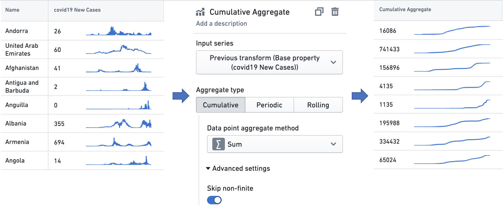
Start means that each output point represents the beginning of a time interval, and is an aggregate over the input points that follow it, while End means that each output point represents the end of a time interval, and is an aggregate over the input points that precede it.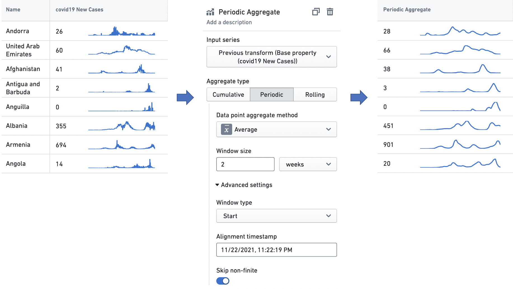
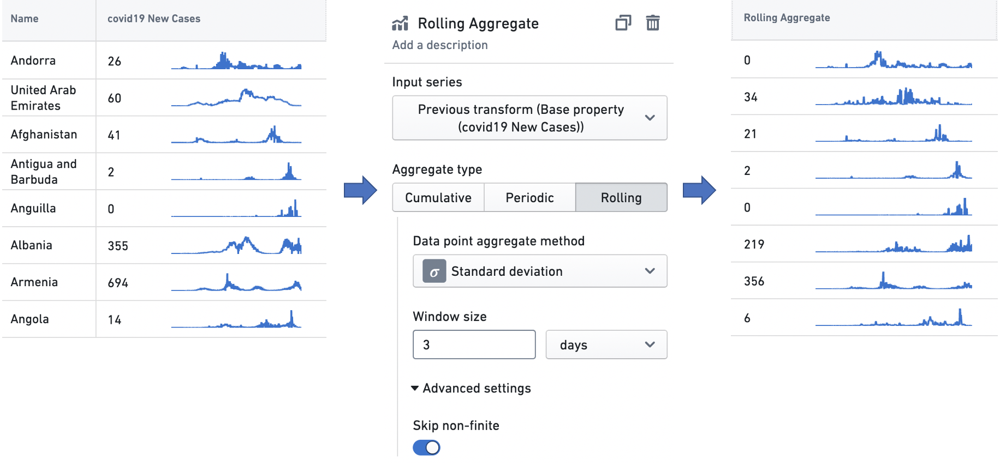
The derivative transform produces a time series representing the rate of change of the input time series. It also can perform a unit conversion on the rate of change, to enable interpretation with a user-specified time unit. For example, given a time series of the cumulative kilometer distance covered by a car over time, the transform can perform the scaling necessary to interpret the rate of change â the speed â at any point in terms of "kilometers/hour" (a common metric for measuring speed), "kilometers/second", or any similar temporal denominator.
In the example below, the derivative transform is configured to produce a weekly rate of change in COVID-19 case counts. These case observations are recorded daily, so there is one data point per day in the input time series, and a rate of change would ordinarily be interpreted as having the unit "cases/day". However, as the time unit for the transform is set to weeks, the transform scales the daily rates of change by a factor of seven (as there are seven days in a week), so the user can interpret the time series in the unit "cases/week".
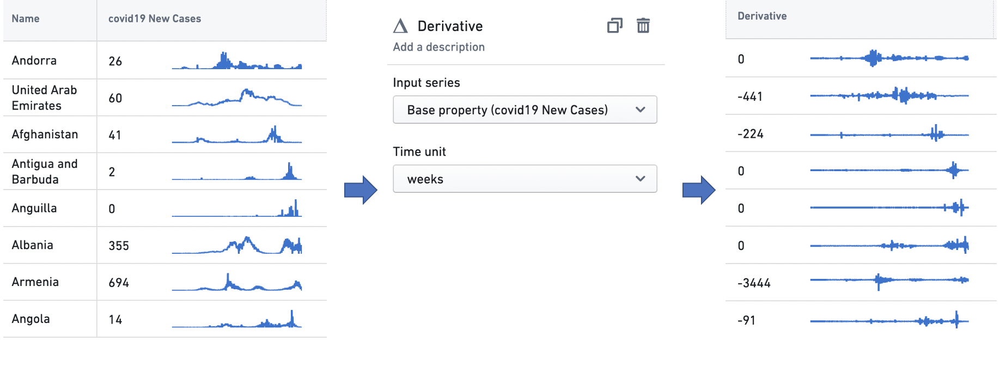
The formula transform computes a domain-specific language (DSL) formula on a set of input time series. Using the Add input button, users can add new input time series â either time series properties or the outputs from other transforms â to the transform, and then build formulas using variable references to these inputs. The example below scales the input time series by a factor of two, and adds five to the result.
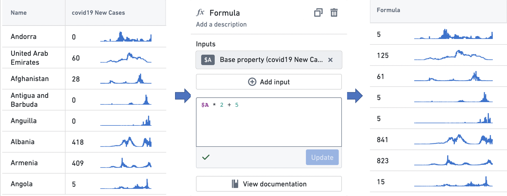
The integral transform produces a time series representing the cumulative area under the input time series when it is visualized as a graph. It also can perform a unit conversion on the area, to enable interpretation with a user-specified time unit. For example, given a time series of the kilowatt power consumption of a home, the transform can perform the scaling necessary to interpret the total area â the total energy consumed â at any point in terms of "kilowatt-hours" (the standard metric for measuring electricity consumption), "kilowatt-minutes", or any similar temporal numerator. The user can also specify the integration method, which is the method used to interpolate the value used between time series points. The options here are linear, which uses the average value between two time points; left hand sum, which uses the value at the earlier time point; and right hand sum, which uses the value at the later time point.
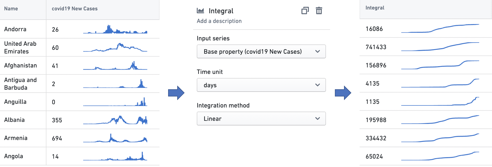
The time range transform filters an input time series to a user-specified time range. See the Time ranges section below for more information on specifying time ranges.
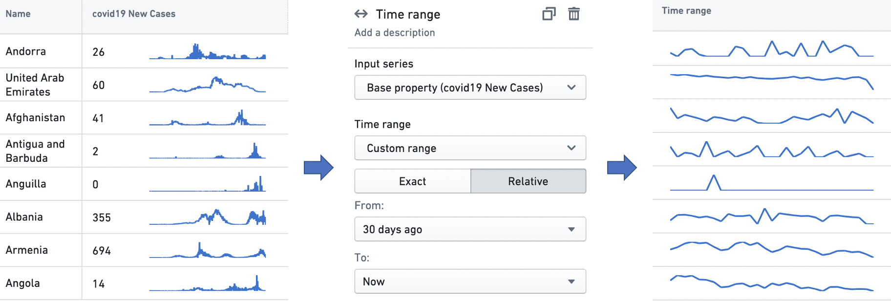
The time shift transform generates an output time series that is identical to the input time series, but temporally shifted by a user-specified duration in a user-specified direction.
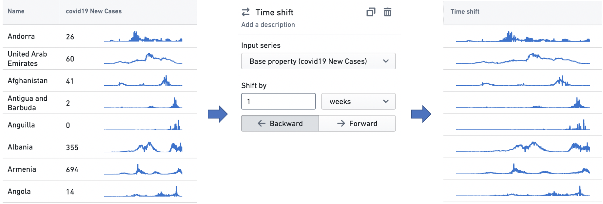
A time series summarizer configures a summary statistic for time series data; that is, a value that reflects the state of the time series. Summarizers are used in all Workshop widgets that support time series properties. For instance, the Object table and Metric card widgets use them to configure a single value to be displayed with a time series, as in the examples below. See Object table and Metric card for more information on the respective use cases.
There are two types of time series summarizer.
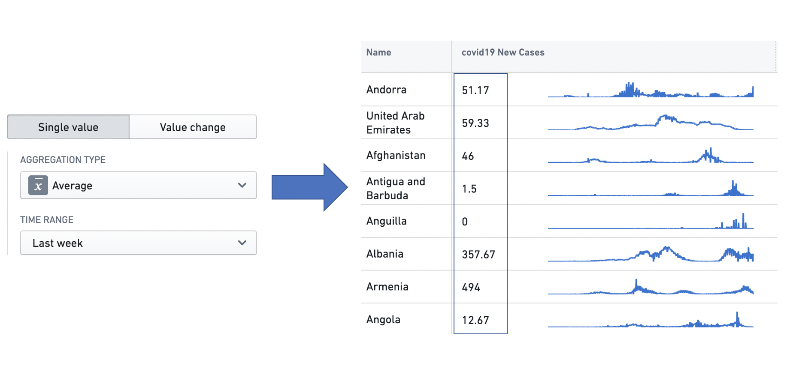
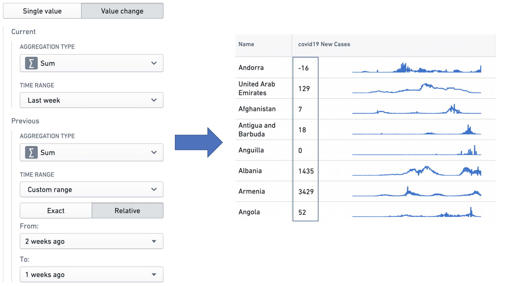
A summarizer is defined by an aggregation type, which specifies the calculation to be performed over the input data points, and a time range, which specifies the time range over which the aggregation is performed. See the Time ranges section below for more information on specifying time ranges.
The different aggregation types are as follows.
A time range specifies a finite interval of time, defined by its start and end times. We also call it a time window. Time ranges are used in time series transforms, to filter time series data using the time range transform; in time series summarizers, to specify the time window over which the aggregation is performed; and in the Object Table and Metric Card widgets, to configure sparklines and baselines. See Time series transforms, Time series summarizers, Object table and Metric card for more information on the respective use cases.
The interface to specify a time range is consistent across these applications. Users can select from one of the default options in the dropdown, or choose to specify a custom range.
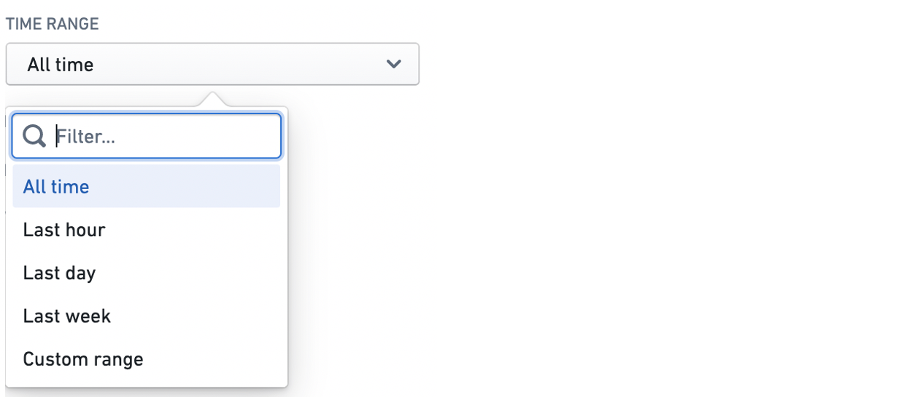
The custom range comes in two varieties: exact and relative.
The exact option uses a date and time picker to allow the user to specify absolute timestamps for the start and end of the range. The window specified here is absolute and hence does not change.
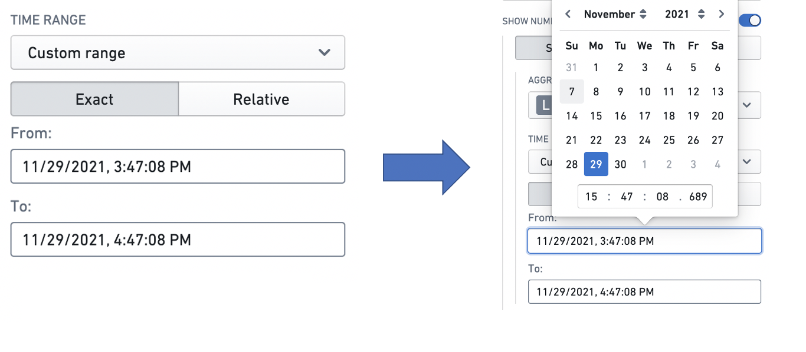
The relative option specifies the start and end of a window relative to the current time. Note that the current time is computed when it is first needed (e.g. when a user displays a widget using a relative time range). It then stays constant unless the web page is reloaded â this is to ensure consistency between widgets. Hence, the time window specified here is not an absolute window â it slides with the passing of time.
For example, a relative start of "2 weeks ago" specifies a window beginning December 1 when the application is opened on December 15, but December 2 when the application is opened on December 16. Similarly, a relative end of "1 week from now" specifies a window ending December 22 when the application is opened on December 15, but December 23 when it is opened on December 16. The window size can be specified in terms of milliseconds, seconds, minutes, hours, days, and weeks.
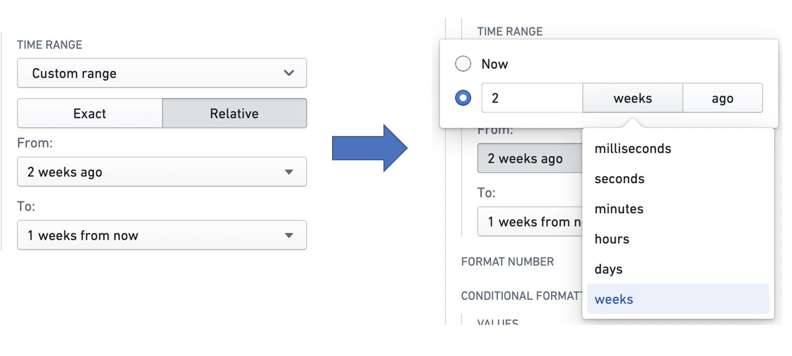
A baseline is an additional time series line, rendered in combination with a sparkline in a visually distinguishing way (e.g. as a dotted line). By providing visual grounding and context for a time series, a baseline can help users interpret trends. Baselines can be configured in the Object Table and Metric Card widgets.
There are three types of baseline: Static, Numeric property, and Time series property.
The Static type means that the value of the baseline for every time series is a static user-specified value. The user can input this value into a text box. In this example, the Weekly Cases column has a baseline with a static value of 1000.
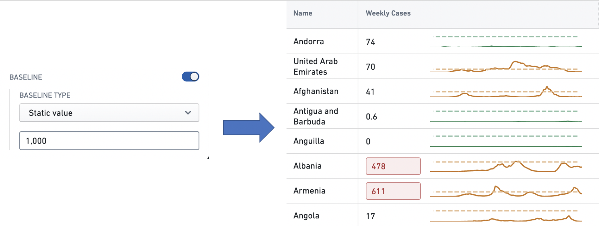
The Numeric property type means that the user can specify a numeric property of the object type feeding the widget, whose value for each object is used as the baseline for the corresponding series. See Property for more information on object properties. In this example, each row in the Hospital Admissions column has a baseline whose value is the value of the Hospital Capacity property of the corresponding Country object.
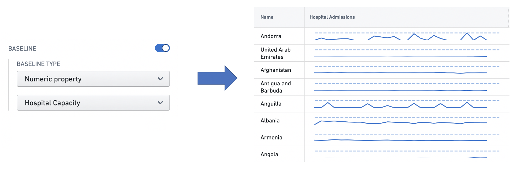
The Time series type means that the user can configure a time series summarizer to generate a unique baseline value for every series. See Time series properties in Workshop for more information on summarizers. In this example, each time series in the Weekly Cases column has a baseline with the value of the most recent observation in the time series.
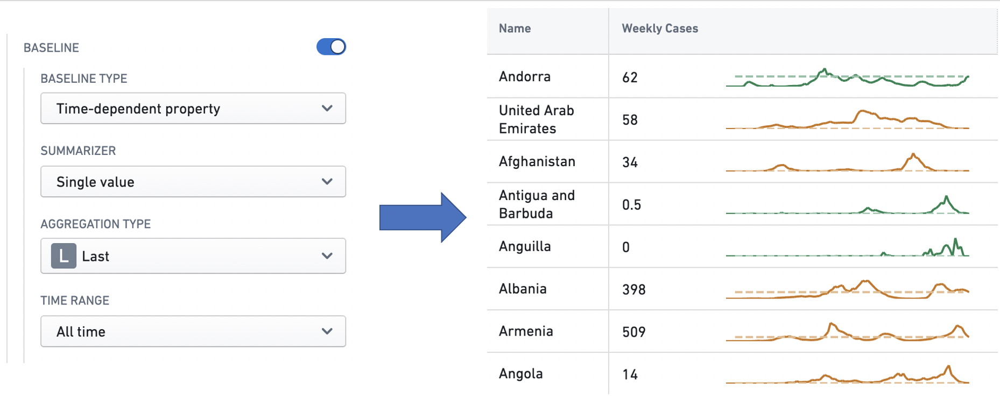